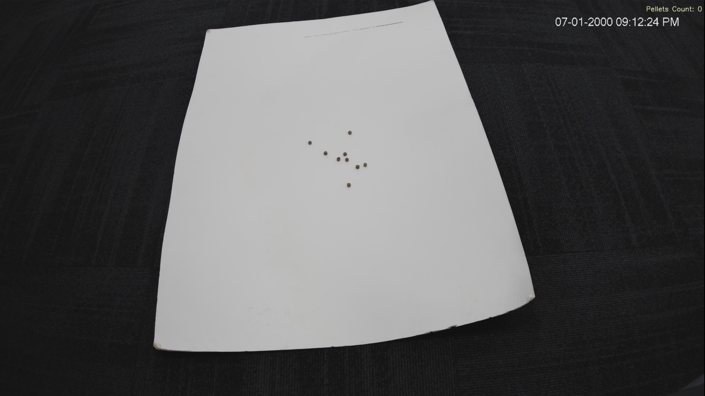

{% extends "base.html" %}
{% block title %}Camera View{% endblock %}

{% block content %}
<h1 style="text-align: center; margin-top: 20px; font-size: 32px; font-weight: bold;">FEEDING VIEW</h1>
<hr style="border: none; border-top: 2px solid #ddd; margin-bottom: 20px;">

<div class="video-feed-container">
    <!-- Actual Feeding View img tag -->
    <!--  -->

    <!-- Placeholder Feeding View img Tag-->
    
</div>
<br>
<style>
/* Reset default margins and paddings */
body, html {
    height: auto;
    width:auto;
    margin: 0;
    padding: 0;
    display: flex;
    flex-direction: column;
    background-color: #2f3136;
    color: #ffffff;
    font-family: 'Arial', sans-serif;
    overflow: hidden;
}

/* Header and Footer styles */
.header, .footer {
    flex: 0 0 auto; /* Take as much space as needed, but not more */
    text-align: center;
    background-color: #333; /* Or any other color you prefer */
    color: white;
    padding: 10px 0; /* Adjust the padding as needed */
}

/* Video Feed container */
.video-feed-container {
    flex: 1; /* Fill the remaining vertical space */
    display: flex;
    align-items: center;
    justify-content: center;
    background-color: black; /* Clean background color */
}

/* Video Feed styles */
.full-screen-video {
    max-width: 90%; /* Ensure the video does not exceed its original size */
    max-height: 90%; /* Ensure the video does not exceed its original size */
    width: 80%;
    height: 80%;
    object-fit: contain; /* Ensures the video fits inside its container without distortion */

}
</style>
<script>
        window.addEventListener('beforeunload', () => {
        navigator.sendBeacon('/clear_video_feed_access');
    });
</script>
{% endblock %}
